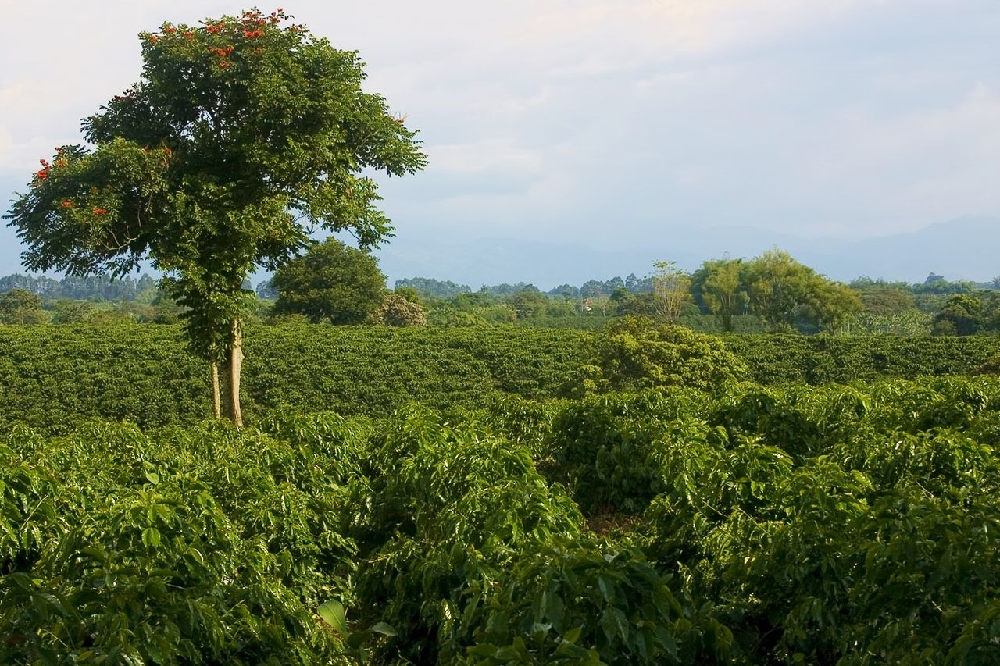

-
Columbia
The first coffee crops were planted in the eastern part of the country. In 1808 the first commercial production was registered with 100 green coffee bags (60 kg each) that were exported from the port of Cucuta, near the border with Venezuela.[13] A priest named Francisco Romero is attributed to have been very influential in the propagation of the crop in the northeast region of the country. After hearing the confession of the parishioners of the town of Salazar de la Palmas, he required as penance the cultivation of coffee. Coffee became established in the departments of Santander and North Santander, Cundinamarca, Antioquia, and the historic region of Caldas.
Despite these early developments, the consolidation of coffee as a Colombian export did not come about until the second half of the 19th century. The great expansion that the world economy underwent at that time allowed Colombian landowners to find attractive opportunities in international markets. Little by little, the United States became the most important consumer of coffee in the world, while Germany and France became the most important markets in Europe.
 The then large Colombian landowners had already tried to exploit the new opportunities that the expansion of the international markets offered. Between 1850 and 1857 the country experienced a significant increase in tobacco and quinine exports, and thereafter leather and live cattle. These early efforts in the export of agricultural commodities turned out too fragile; they in fact were only reactionary attempts to find the greatest profitability from the high international prices of the time, rather than attempts to create a solid and diversified export platform. The production of these sectors went into a period of decline when the respective bonanza of their international prices terminated, hence a true industrial consolidation was prevented.
With the fall of international prices that registered the transition from the 19th to the 20th century, the profitability of the large estates plummeted. As if this was not enough, the Thousand Days War, which took place during the first years of the new century, also negatively influenced the important landowners, making it impossible for them to maintain their plantations in good conditions; this circumstance summed to the fact that these producers had incurred in large amounts of foreign debt in order to further develop their plantations, which finally ruined them. The coffee estates of Santander and North Santander entered into crisis and the estates of Cundinamarca and Antioquia stalled.
The crisis that affected the large estates brought with it one of the most significant changes of the Colombian coffee industry. Since 1875, the number of small coffee producers had begun to grow in Santander as well as in some regions of Antioquia and in the region referred to as Viejo or Old Caldas. In the first decades of the 20th century a new model to develop coffee exports based on the rural economy had already been consolidated, supported by internal migration and the colonization of new territories in the center and western regions of the country, principally in the departments of Antioquia, Caldas, Valle, and in the northern part of Tolima. Both the expansion of this new coffee model and the crisis that affected the large estates allowed the western regions of Colombia to take the lead in the development of the coffee industry in the country.
This transformation was very favorable for the owners of the small coffee estates that were entering the coffee market. The cultivation of coffee was a very attractive option for local farmers, as it offered the possibility of making permanent and intensive use of the land. Under this productive model of the traditional agriculture, based on the slash and burn method, the land remained unproductive for long periods of time. In contrast, coffee offered the possibility of having an intense agriculture, without major technical requirements and without sacrificing the cultivation of subsistence crops, thus generating the conditions for the expansion of a new coffee culture, dominated by small farms.
Although this new breed of coffee made of country farmers demonstrated a significant capacity to grow at the margin of current international prices, Colombia did not have a relatively important dynamism in the global market of this product. During the period between 1905 and 1935 the coffee industry in Colombia grew dynamically thanks to the vision and long term politics derived from the creation of the Federación Nacional de Cafeteros de Colombia (National Federation of Coffee Growers of Colombia) in 1927.
The union of local farmers and small producers around the Federation permitted them to confront logistical and commercial difficulties that would not have been possible individually. With time and through the research made at Cenicafé, founded in 1938, and the Federation's agricultural Extension Service, improved cultivation systems. More efficient spatial patterns were developed that permitted the differentiation of the product and supported its quality. Currently the Land of Coffee in Colombia includes all of the mountain ranges and other mountainous regions of the country, and generates income for over 500,000 coffee farming families.